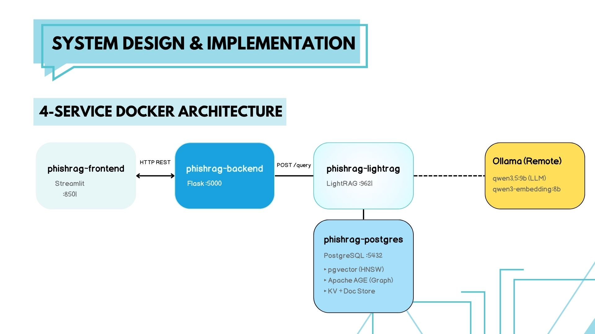
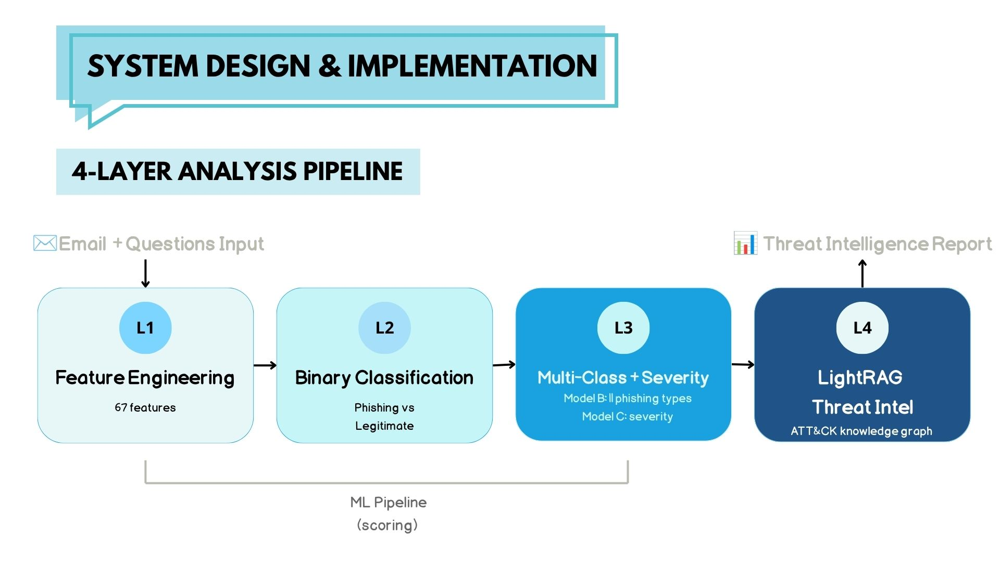
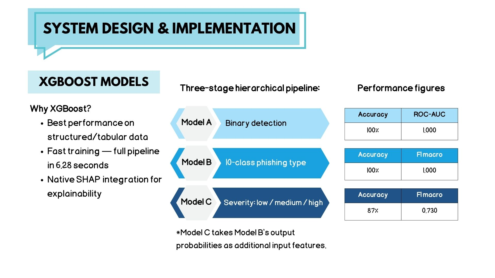

分層任務
將風險、類型與嚴重度拆開處理，使後續檢索能接到更明確的威脅語境。
生成式 AI · 資安 · 課堂團隊案例
CASE STUDY 02
將郵件特徵、分層機器學習偵測與 LightRAG 檢索整合為分析流程，讓結果不只回答是否可疑，也能對照 MITRE ATT&CK 知識框架提供可追溯的判讀脈絡。
本頁為課堂團隊案例的整理，節錄未含組員身分或可識別資訊的簡報頁面。資料集為合成釣魚郵件資料；完整程式碼、部署設定與正式資安驗證均未公開。頁面中的模型數字僅反映課堂資料評測，不能代表真實環境的防護效能。
問題
郵件過濾結果需要可理解的風險脈絡與威脅情資對照，而不只是二元判斷。
設計
以 XGBoost 分層偵測釣魚風險、類型與嚴重度，再以 LightRAG 補上檢索與引用脈絡。
資料範圍
10,000 封合成郵件，以及 MITRE ATT&CK Enterprise 知識庫。
系統設計
從郵件文字、連結、寄件者與結構訊號建立 67 項特徵，依序處理是否為釣魚郵件、10 種釣魚類型與低／中／高嚴重度。
結合 SHAP 檢視個別特徵對判斷的影響，讓模型輸出可回到具體的文本與結構線索討論。
將郵件分析結果銜接至 MITRE ATT&CK 知識圖譜，透過檢索提供技術、偵測規則與脈絡化說明。
重點頁面與數據



案例重點
將風險、類型與嚴重度拆開處理，使後續檢索能接到更明確的威脅語境。
以 SHAP 檢視判斷方向，避免模型結果只剩下無法討論的分數或標籤。
以 ATT&CK 知識框架補足模型之外的技術脈絡，讓回答可以回查至對應的情資內容。
課堂原型的核心：
讓風險判斷、可解釋性與檢索脈絡彼此連接。
這是一份課堂團隊案例的去識別化呈現。
回到精選作品 ←